一、系统安装与设置
1. VPN 设置
1.1 您的专属 VPN 私钥将以电子邮件形式获得。（注：详情请咨询常名科技，联系人：赵为。电话：13520703888。）
1.2 点击直接下载或在浏览器中输入 http://118.89.230.78:9082/openvpn-install.exe 下载并安装 OpenVPN GUI 。
1.3 连接VPN
- 双击 【OpenVPNGUI】 图标，弹出消息窗口。
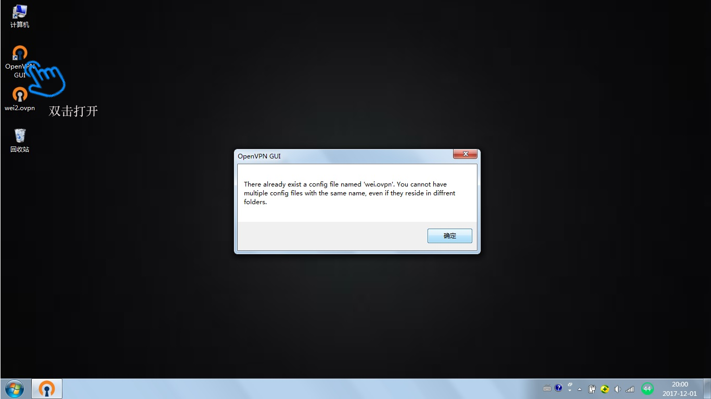
- 点击 【确定】 。桌面右下角出现【OpenVPN GUI】图标（注：如果不出现，点击右下角三角，会出现此图标），右键单击 【OpenVPN GUI】图标。
- 右键点击 【Import file...】。
- 选中您从邮箱中下载的 VPN 。
- 右键点击桌面右下角 【OpenVPN GUI】 图标，选中您的 VPN ，点击 Connect。
- 弹出连接窗口，输入VPN名及密码，点击 【OK】。
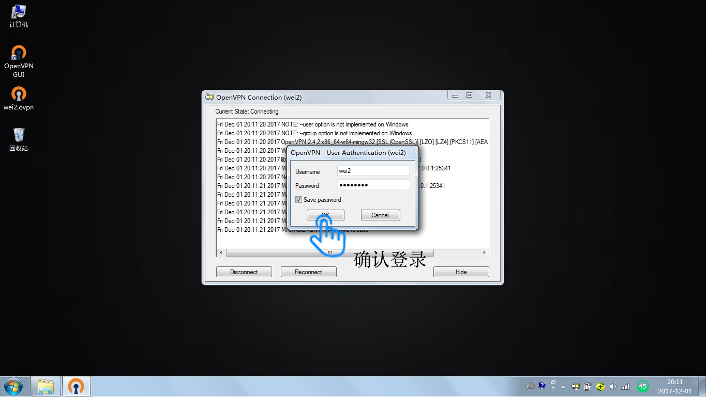
至此 VPN 连接成功。
2. 浏览器设置
2.1 建议您使用 谷歌浏览器，登录其网站 https://www.google.com/chrome/browser/ 下载并安装谷歌浏览器。
2.2 安装成功后，打开谷歌浏览器，设置浏览器自动接受来自慧的flash插件：
- 点击右上角-> 【设置】 -> 【高级】 -> 【内容】 -> 【Flash】。
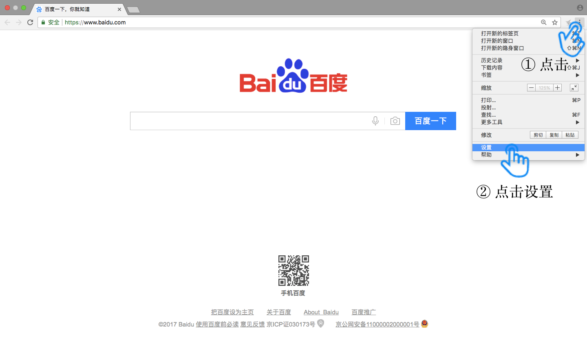
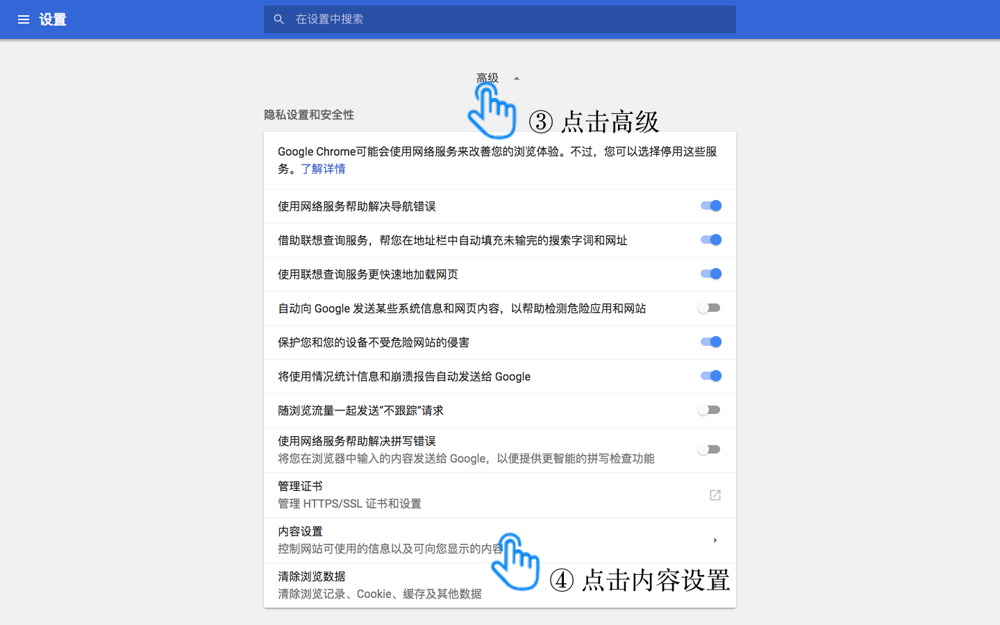
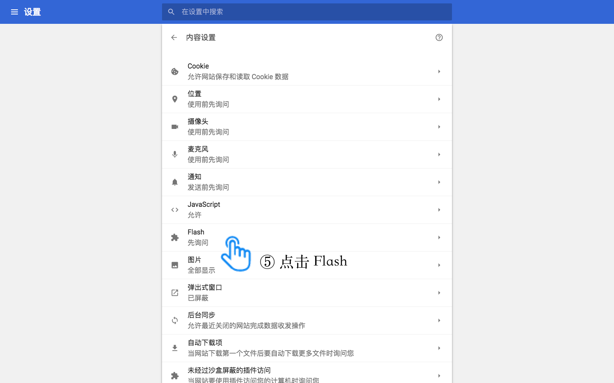
- 在【允许】处点击 【添加】，输入网址10.0.1.10，点击 【添加】，返回主界面。
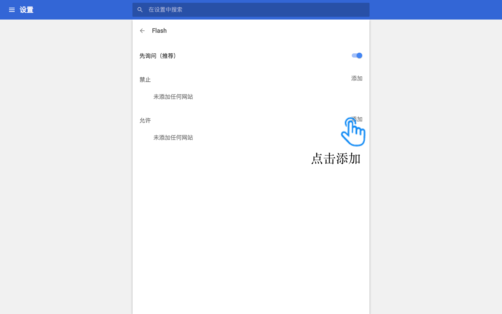
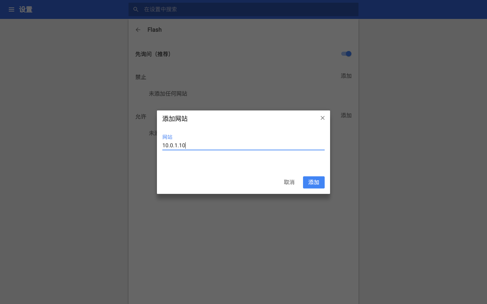
二、系统使用
1. 登录" 慧"系统网页端
连接好VPN后，登录 http://10.0.1.10:9086 ，输入用户名和密码，点击 【登录】 进入网页端。
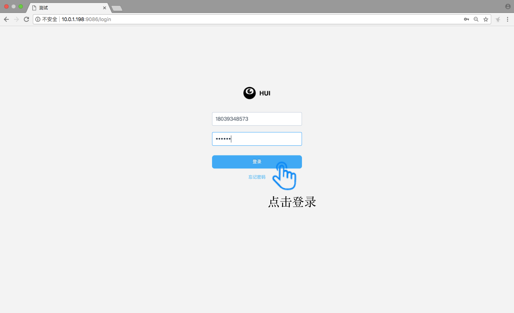
2. 数据统计平台
登录成功后，页面会自动跳转到 【统计】 主界面。
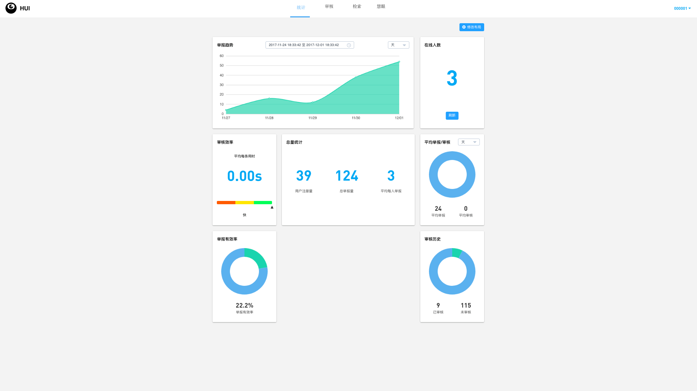
如上图所示：
举报趋势 ：以曲线图的形式直观的显示历史举报数据，可根据需求查看不同时段及不同单位时段的举报趋势。注：举报数据统计的是视频举报量和照片举报量的总和。
在线人数 ：点击 【刷新】 查看最新的Hui-app在线用户量。
审核效率 ：明确显示工作人员审核举报信息的速度。
总量统计 ：实时统计并显示用户注册量、总举报量、平均每人举报量。
平均举报/审核 ：平均举报指按单位时间段（每小时/天/月，可选时间间隔）的举报数，就是这段时间的举报总数除时间。平均审核，指的是审核员每小时/天/月的审核数。
举报有效率 ：以环状图和百分数的形式显示用户的举报有效率。
审核历史 ：显示已审核和未审核的举报数量。
3. 【审核】举证信息
点击 【审核】-> 【点击开始分配图标】开始对举证信息的审核，用户可清晰的看出举证信息的【时间】、【地址】。
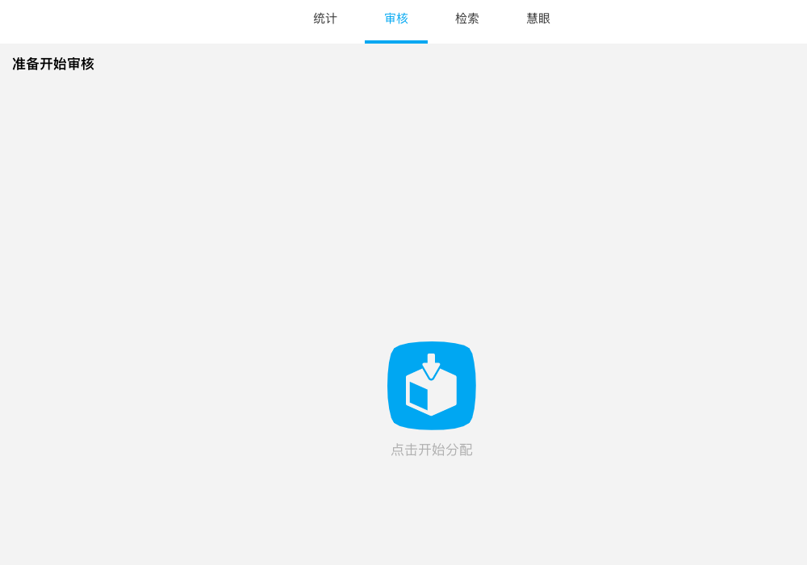
查看视频举证信息：播放视频信息时，可进行下载、旋转、全屏等操作。
查看图片信息：点击图片，后可进行拖动、，图片信息可以进行缩放、旋转等操作。
审核举证信息： 观看举证信息后，无效信息选择【无效举报】，有效举证信息选择违反的交通规则，并输入视频中违规车辆的【车牌号】，点击 【确认违规】举证有效。
4. 【检索】举证信息
检索页面如图：
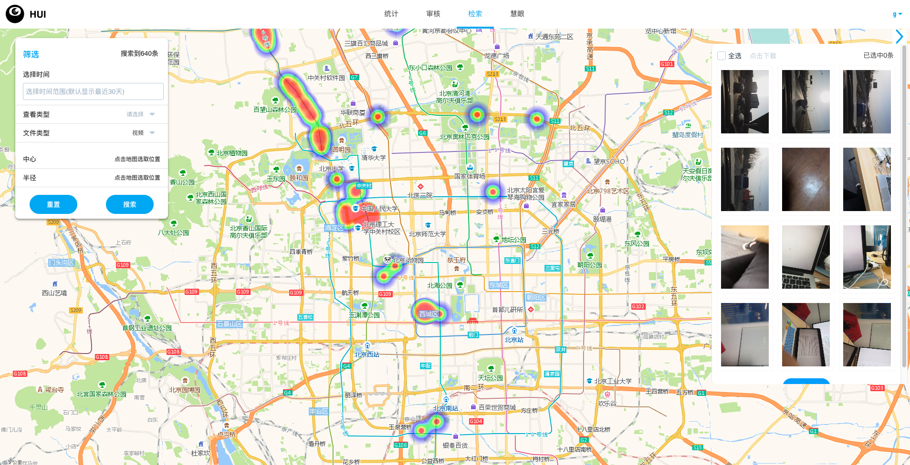
4.1 根据筛选条件搜索举证信息：用户可通过改变 【选择时间】、【查看类型】、【文件类型】、【中心】、【半径】 来搜索要查看的举证信息。
选择时间：点选要查看信息的始末时间查看不同时间段举证信息。 查看类型：选择搜索的信息类型。 文件类型：选择查看视频文件、照片文件。 中心、半径：点击地图选取查看信息的范围。
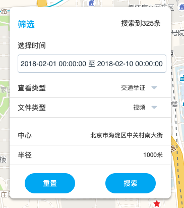
4.2 在地图查看举证信息分布
4.2.1 通过热力图查看举证信息范围：改变搜索条件，地图上会显示与检索结果对应的 热力信息分布 ，用户可以清楚的查看举证信息的位置分布。
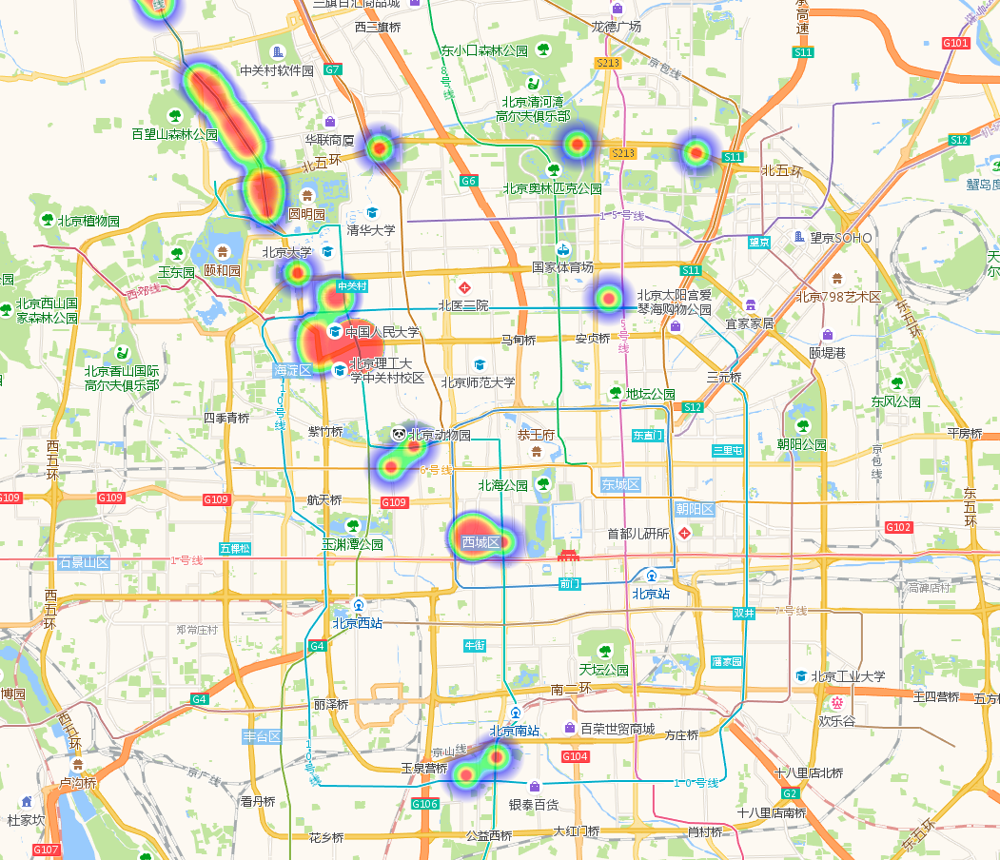
4.2.2 通过地图上图标查看具体举证信息：当地图放大，热力图消失时，用户可以通过选择 搜索中心 和 半径 搜索举证信息，地图上会显示与信息对应的图标，点击图标可与举证信息对应。
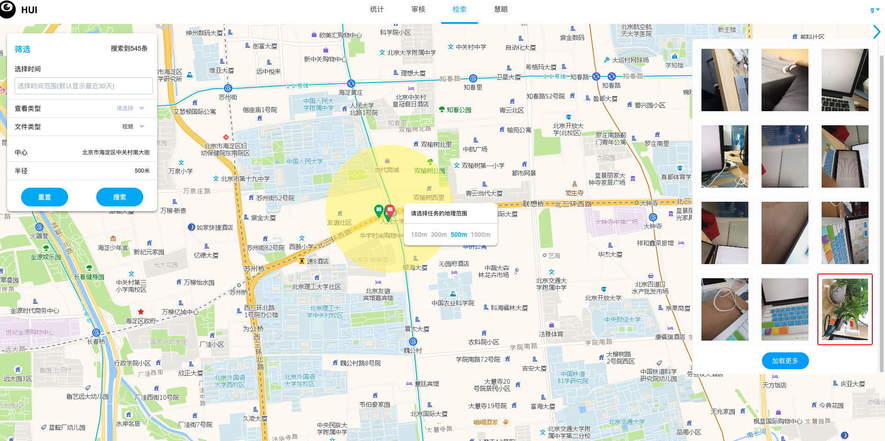
4.2.3 点击地图上图标查看对应的举证信息：地图上出现与检索结果对应的图标时，用户可根据点击图标，图标由绿色变成红色，同时相对应的举证信息会出现红色边框。
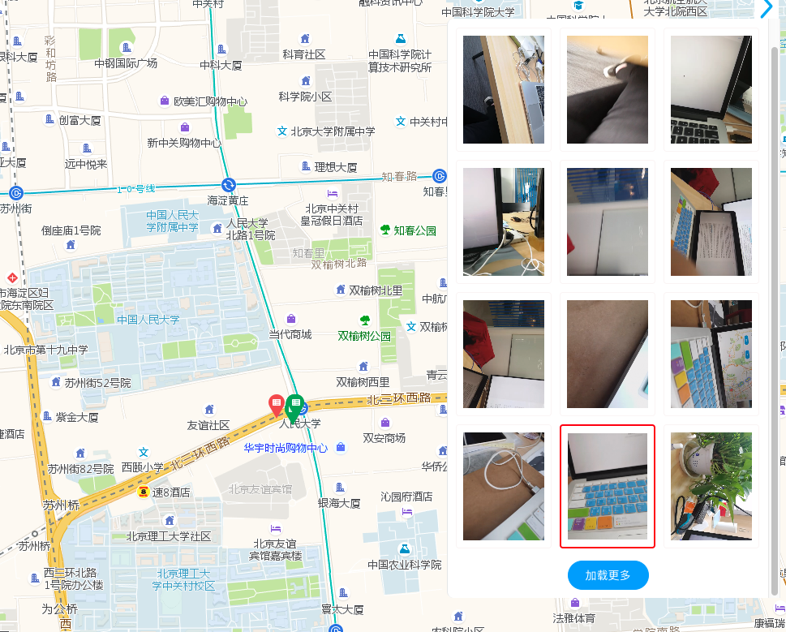
4.3 对举证信息进行查看及下载
4.3.1 查看举证信息： 双击举证信息，可查看详细的视频或图片内容，对举证内容可进行观看、放大缩小、旋转、下载等操作。
4.3.2 批量下载举证信息： 单击举证信息或勾选全选，然后点击【点击下载】即可批量下载举证信息。
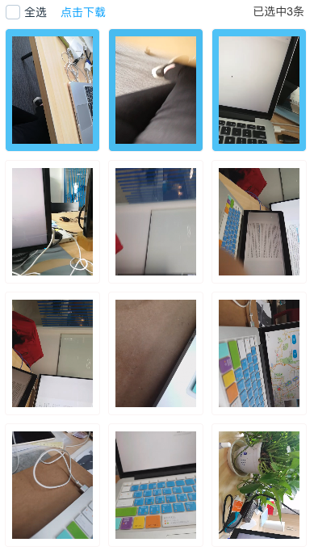
5. 实时视频信息采集
点击 【慧眼】，您即可进入到视频信息采集页面。可以根据地理位置和实时在线用户进行视频信息采集。
5.1 获取视频地点
5.1.1 通过放大拖拽地图搜索在线用户 ：双击地图上 热力图 放大地图，拖拽地图。当热力图标消失时，可看到在线 用户图标。
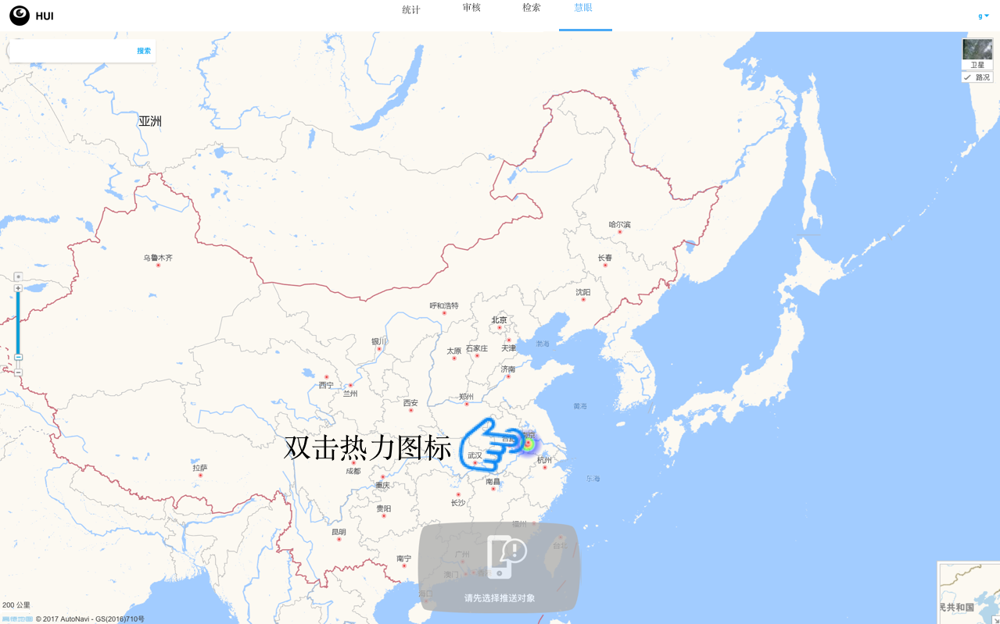
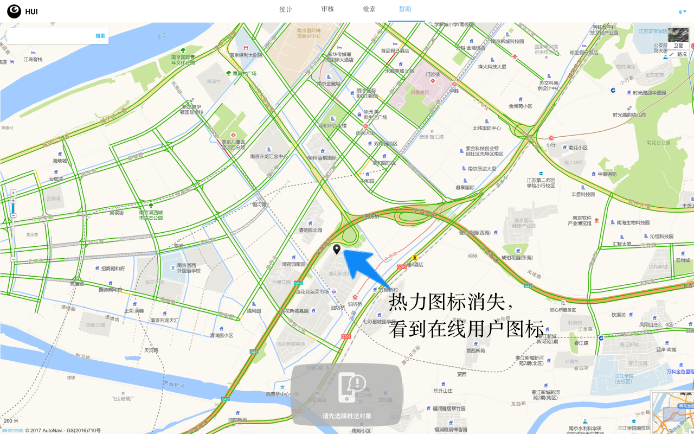
5.1.2 通过搜索快速选定视频采集范围 ：左上角在搜索框输入地名或地名拼音，点击 【搜索】，可看到在线用户图标。
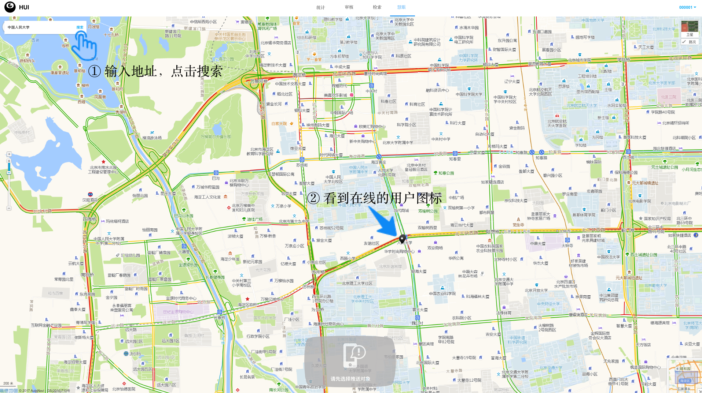
5.2 向在线用户发送信息采集邀请
5.2.1 选择推送视频的用户 ：点击 用户图标，图标变蓝，同时地图上方，显示出相应的 用户信息，鼠标滑过用户信息时，会出现取消推送，单击即可取消对其用户的选择。
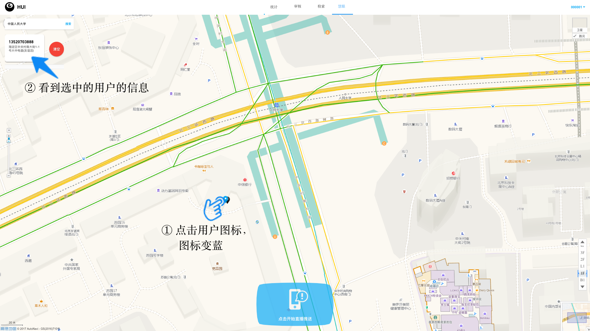
鼠标单击用户图标周围，出现可选范围，您可根据需求，选择相应范围内的用户。
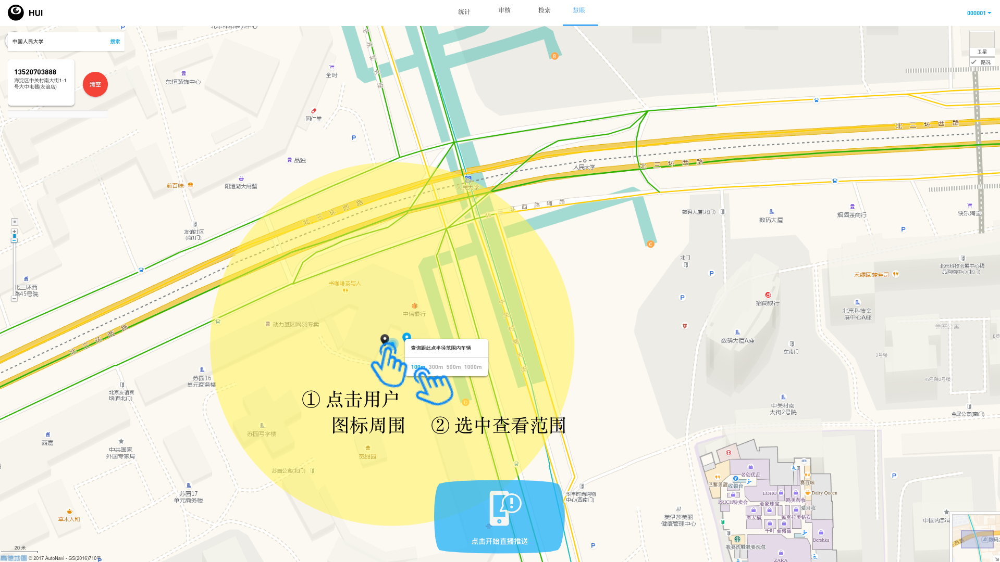
5.2.2 推送视频信息采集 ：选择好采集视频的用户后，点击地图下方蓝色的 【点击开始直播推送】，进入视频采集页面，开始视频采集。用户同意视频采集的条件下，您可实时获取用户端拍摄到的 视频信息。
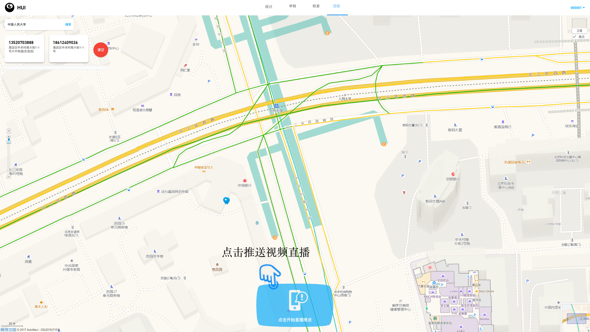
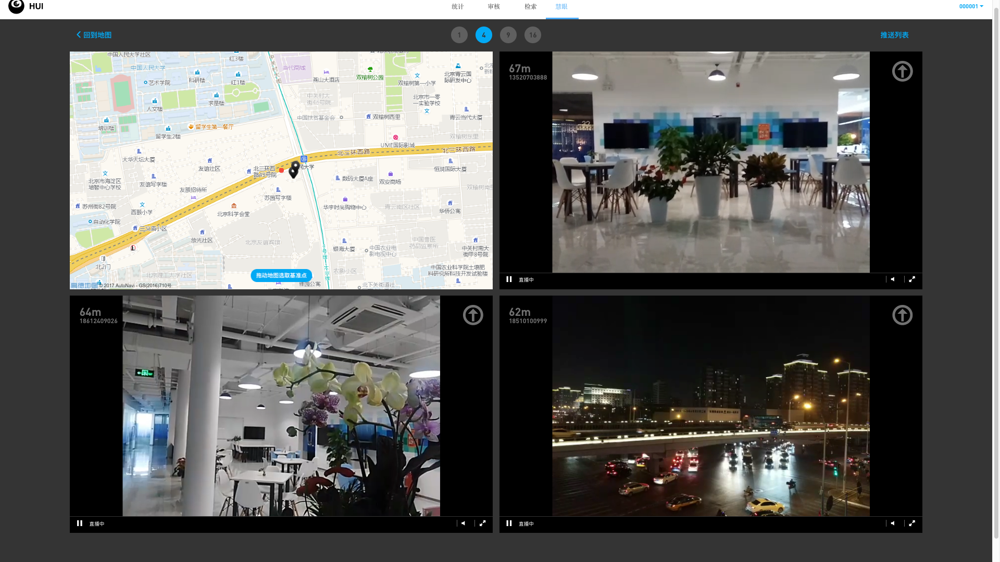
5.2.3 追加推送视频的用户 ：点击 【推送列表】，会显示当前推送和连接视频采集的基本信息。您可以点击 【追加】 回到地图，重新选择其他区域的在线用户进行选择推送视频采集任务。
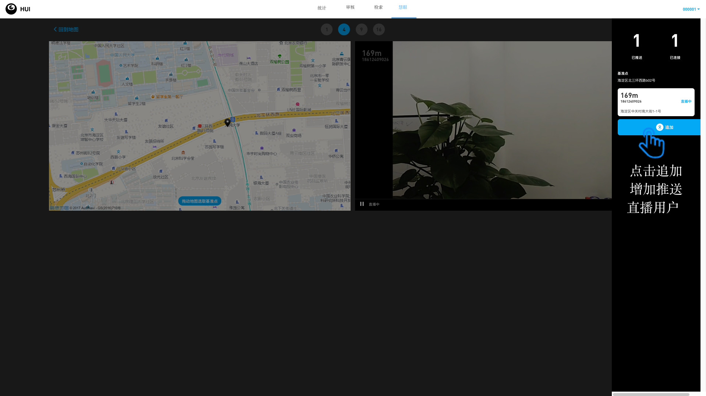